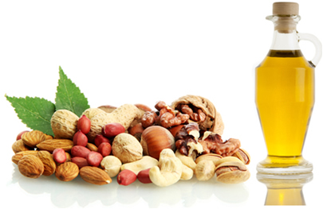

Os lipídios, também chamados de gorduras, são biomoléculas orgânicas compostas, principalmente, por moléculas de hidrogênio, oxigênio, carbono. Os lipídios apresentam diversas funções orgânicas: reserva energética, isolante térmico, além de colaborar na composição da membrana plasmática das células.
Os lipídios apresentam várias funções, destacando-se:
-Composição das membranas biológicas: Todos os tecidos apresentam lipídios em sua composição, uma vez que a membrana das células é formada por fosfolipídios.
-Fornecimento de energia: Quando comparado com os carboidratos, os lipídios liberam, em média, 2,23 vezes mais energia quando oxidados.
-Precursores de hormônios e de sais biliares: Os lipídios estão relacionados com a produção de hormônios esteroides, tais como a testosterona, progesterona e estradiol. Também se relacionam com a produção de sais biliares, compostos que agem como detergente, ajudando no processo de absorção de lipídios.
-Isolante térmico e físico: Os lipídios garantem proteção contra as baixas temperaturas e contra choques mecânicos.
-Impermeabilização de superfícies: Os lipídios impermeabilizam evitando a desidratação. Um bom exemplo são as ceras encontradas nas
superfíciesdos frutos.
Entre os lipídios, temos os principais: glicerídeos, os fosfolipídios, os cerídeos e os esteroides.
Glicerídeos
- podem ser sólidos ou líquidos em temperatura ambiente.
Fosfolipídios - moléculas anfipáticas, isto é, possuem uma região polar, tendo afinidade por água, e outra região apolar, que repele a água.
Cerídeos - classificados como lipídios simples, são encontrados na cera produzida pelas abelhas e na superfície das folhas e dos frutos. Exercem função de impermeabilização e proteção.
Esteroides - formados por longas cadeias carbônicas dispostas em quatro anéis ligados entre si. São amplamente distribuídos nos organismos vivos, constituindo os hormônios sexuais, a vitamina D e os esteróis.